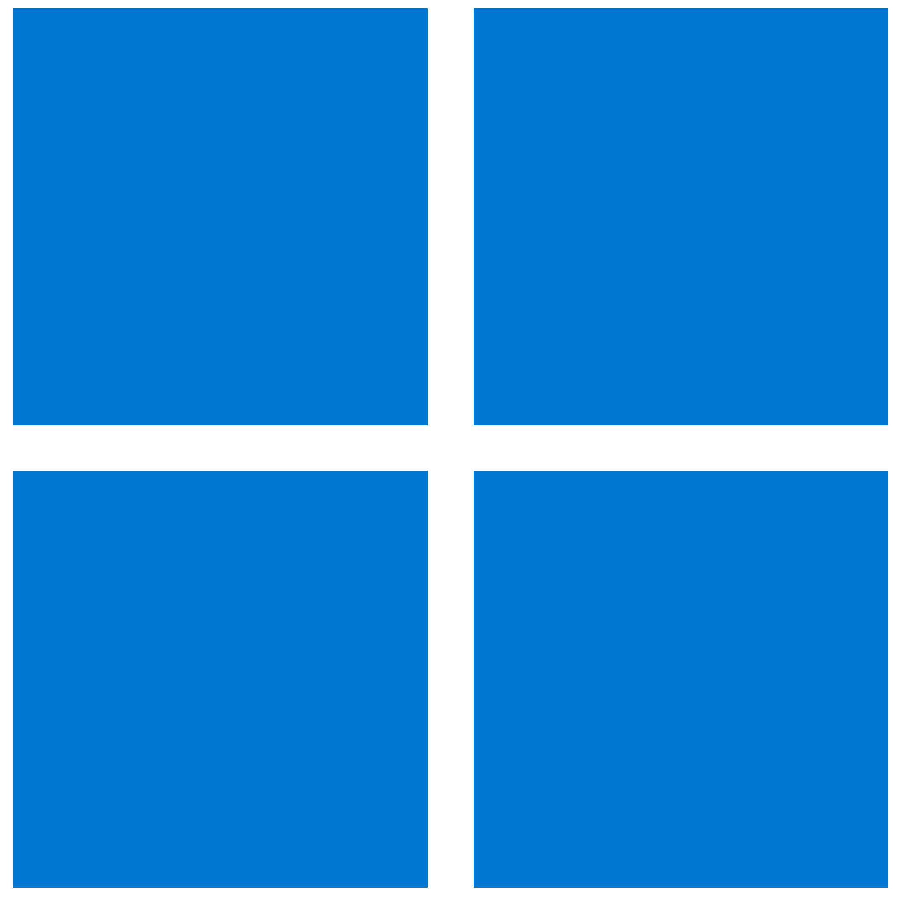

VirtualBox
VirtualBox is a free and open-source software for hypervisor and virtualization, developed by Oracle Corporation.
Avaible platforms:

VMware (Workstation/Fusion)
VMware is a global leader in cloud infrastructure and digital workspace technology.
Avaible platforms:

Parallels Desktop
Parallels Desktop is a virtualization software for macOS for run Windows and other OSes with a lot of interesting features and tools.
Avaible platforms:


QEMU
QEMU is a free and open-source emulator and virtualizer that performs hardware virtualization.
Avaible platforms:
Hyper-V
Hyper-V is a native hypervisor that creates virtual machines on x86-64 systems running Windows.
Avaible platforms:


UTM
UTM is a free and open-source virtualization and emulation software for macOS and iOS based on QEMU.
Avaible platforms: